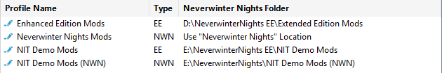
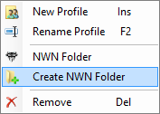
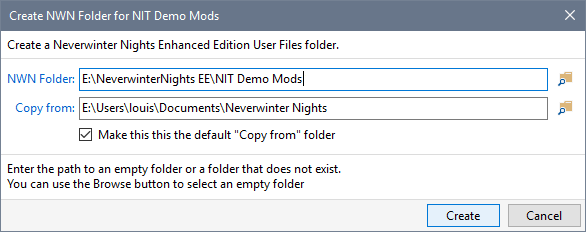

Each profile operates with a specific Neverwinter Nights Installation or Enhanced Edition User Files folder. This feature allows you to create development or test installations that do not interfere with your live gaming environment.

Use the Profiles page in Advanced Settings to create a Neverwinter Nights folder for your Profile.

You must use the default User Files folder for Steam's Enhanced Edition. Steam does not have a mechanism to specify non-standard locations for the User Files. This means Steam users can only have a single NWN folder for all Profiles (ie Steam does not support multiple NWN installations).
You can enable "Use NIT to manage Steam's Workshop Content" to avoid this limitation.
 Edit Icon and click Create NWN Folder.
Edit Icon and click Create NWN Folder.

Tip
If you plan to have multiple installations of Neverwinter Nights, copy the Installation folder to a backup directory after you have started a freshly installed Neverwinter Nights and defined your preferences.
Use the backup copy as the Copy from location when you create Neverwinter Nights folders.
For Beamdog's Enhanced Edition, use the Documents\Neverwinter Nights folder as your Copy from location and always specify a different directory as the NWN Folder.
Create a Neverwinter Nights folder
Specify a Neverwinter Nights folder